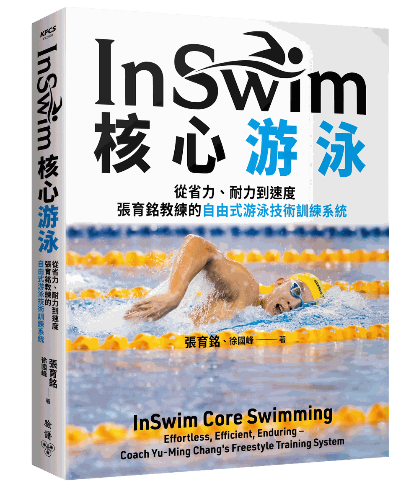

《InSwim 核心游泳》開放預購｜附主編序：我在池邊看見的訓練系統，值得被更多人知道

KFCS 第一本以 Swimming Drills 為主的工具書《InSwim核心游泳》，這是國內頂尖游泳教練 張育銘 多年醞釀成就的技術訓練系統，以書的形式呈現，今天在博客來開放預購了。
這本書我做了兩年。身為臉譜出版 KFCS 訓練書系的主編，我花了許多時間反覆訪問張育銘教練，也訪談他的學生、家長，以及一路陪在旁邊訓練選手的夥伴，為的是把一套原本只存在於花蓮池邊的訓練系統，梳理成一本能夠被閱讀、被理解與使用的書。在這段過程中，我想我的收穫是最大的，跟張教練學到好多，不只是在游泳技術上，也對我在跑步教學上很有啟發。
我希望這本書能帶給國內的游泳與鐵人三項運動員與教練許多啟發，並在池畔訓練時能有更多優質的訓練工具可以選擇。
▎這本書裡有什麼
▹ 十大類、共 55 項關鍵技術訓練動作，依難度與彼此的關聯性排出完整的訓練脈絡
▹ 逾 300 張泳池實拍動作解說照，每一項動作都附訓練要領與指導細節
▹ 初階、中階、高階三種程度的完整 17 週每日訓練課表，可以直接用，也可以當範本調整
▹ 動作示範由男子 1500 公尺自由式全國紀錄保持人黃國庭完成，他本身就是這套系統長期累積出來的成果
張育銘教練自民國八十一年起執教至今超過三十年，帶出全中運國男 1500 公尺自由式五連霸，高男 1500 公尺七連霸，也訓練出五位游進十六分內的 1500 公尺選手。這套系統首度完整公開。
以下附上我寫在書裡的主編序，完整說明這本書是怎麼開始的，以及我在池邊所見所得，還有為何想做這本書。
▎主編序｜我在池邊看見的訓練系統，值得被更多人知道
我在二〇一二年就認識張育銘教練了。那時，我就知道他是一位很厲害的教練，但直到合作之後，才真正理解他的功力有多深厚。
在花蓮的游泳圈裡，只要稍微接觸過競技訓練的人，大概都聽過他的名字，也知道他帶出過不少成績優異的選手。只是，認識歸認識，早年的我對他的理解，其實還停留在一種遠遠的敬佩：知道他很有本事，但還沒有真正走近，也還不知道他到底是怎麼教、怎麼想，又是靠什麼把選手一步一步帶起來的。
一直到幾年前，在魏振展教練的促成之下，我才有機會近距離觀察張育銘教練的訓練。
那一次，魏振展教練帶了一批臺灣青少年的鐵人三項好手到花蓮移地訓練，找我擔任跑步教練，也找張育銘教練擔任游泳教練。只要這些鐵人選手在練游泳，我幾乎都會想辦法去看。有時候我站在岸上觀摩，有時候乾脆自己下水，跟著一起練。也正是在一次又一次的觀察與體會中，我慢慢看見張育銘教練訓練系統裡最核心、也最令人佩服的地方。
那就是，他對基礎的重視，落實在每一個訓練細節中。
讓我印象非常深刻的是，他帶的明明是一批有實力的菁英選手，但訓練時卻常常不是直接讓大家做完整的自由式動作，也很少進行高強度的間歇訓練。最常做的，是一些看起來很基本、甚至像是初學者才會練的內容。比如蹬牆漂浮打水、徒手打水、閉氣打水、直臂划手，或者只做極短距離的慢游，常常只游個 25 公尺左右就停下來，停一下再游，不急著做下一趟，也不急著把換氣、滾轉、划手全部加進去。
他很強調一件事：當動作還沒穩定時，先不要把難度疊上去，而是先把最簡單的動作做好。等動作穩定了，再慢慢加上比較複雜的部分。
這樣的訓練方式，剛開始看，會讓人覺得很慢。可是看久了，我反而愈來愈確定，這其實是一種真正有效的方法。
在我創立的 KFCS 訓練系統裡，我很強調「可吸收訓練量」這個概念：每一位訓練者，在每個階段，身體都有一個能消化的上限。超過這個上限的刺激，不會被轉化成能力，只會堆積成過度的疲勞，甚至加速受傷。
同樣的道理，在技術學習裡也完全成立。每一次練習，神經系統真正能吸收、內化的動作細節，遠比我們以為的少。把太多動作要求一次疊上去，表面上看起來練很多、很認真，但能穩定被身體記住的往往少得可憐。更糟的是，動作還沒穩定就繼續往上疊加新的動作，這不是在學新技術，而是在用新的錯誤覆蓋舊的錯誤，讓低效率的動作在一層一層中藏得更深。
我自己在教跑步時一直強調：技術問題有因果順序，症狀在表面，但根源在深層。修正表面動作而不找根本原因，往往只是治標，甚至製造新的代價，核心原因還是無法根治。
有許多核心根源不容易發現，但張教練教我很多辨識的方法。例如他讓我知曉「自由式的換氣停頓」這個問題，可能不是出在換氣動作本身，而是平衡或踢腿的基礎還沒建立好。
張育銘教練帶選手的方法正是從最底層的動作邏輯出發。不急著把所有環節組在一起，而是先確認每一塊基礎都打好了，再一步步往上建。
這種「先扎根，再往上長」的訓練觀，在耐力運動的任何領域都是相通的。在跑步裡是如此，在游泳裡更是如此。張育銘教練的訓練邏輯，與我在 KFCS 訓練系統裡長期倡導的核心原則，有著深層的共鳴。即使一個在水裡、一個在陸上，底層的思維卻驚人地相似。而且因為張教練的實務經驗更為豐富，也讓我很想一探究竟。
那時候，我心裡就慢慢浮現一個念頭：張育銘教練這一套訓練系統，很值得被整理下來，也很值得被更多人看見與學習。
只是，那個念頭在當時還停留在心裡。因為我自己手上一直有許多工作在進行，無論是教學、寫作、翻譯，還是其他計畫，排得很滿，所以一直沒有開口詢問張教練的意願，而且那時運動書系也還沒成立。
一直到兩年前，我帶女兒到太昌國小游泳時。因為國風國中的游泳池正在整修，張育銘教練也帶著選手到太昌國小移訓，我們因此又在同一個場域中碰面，也會聊上幾句。聊著聊著，當年那個一直放在心裡的念頭，又慢慢浮現出來了。
到了我女兒最後一堂游泳課的那一天，我主動跟張教練提起：願不願意把你這套游泳訓練系統整理成一本書？沒想到，過了幾天，張教練很爽快就答應了。
這件事，就這樣開始了。
從那一天起，到這本書真正成形，中間走了兩年。我自己花了上百個小時，反覆訪談張育銘教練，也訪談他的學生、家長，以及一路陪伴在旁邊的人。愈談，愈整理，我就愈發覺張育銘教練的訓練法很不簡單，比我想像得還要豐富！
他的系統早已存在於每一次的訓練現場，也累積在三十多年的教學經驗裡，只是有待挖掘與整理。而這本書的工作，就是把那套原本存在於訓練現場的東西，一步一步梳理清楚，並轉化為一套能夠被閱讀、被理解、被使用的訓練系統。也就是現在大家拿到的這本書。
在整理過程中，我們花了很多時間討論，也花了很多時間推敲。最後我們把張教練過去所有使用的技術訓練動作整理成十大類，並且將每一類動作從簡單到困難，逐步排出其訓練脈絡。
更重要的是，我們不只是把動作分門別類而已，而是進一步整理這些動作彼此之間的關聯性：什麼叫基礎技術訓練，什麼叫高階技術訓練；何者屬於內在技術，何者屬於外在技術；不同類別的動作之間，如何互相支撐、如何彼此銜接。
也因此，這本書並不是一本把很多技巧零散堆在一起的書。它真正想做的是，把一套游泳技術訓練系統化，用比較立體、比較有結構的方式呈現出來。你可以把它理解成一張地圖，也可以把它理解成一套工具。它不只是告訴你「有哪些動作可以練」，更試著回答一個更重要的問題：為什麼這個要先練，那個要後練；為什麼有些問題不用先急著修。
對我來說，這本書不只適合競技游泳選手閱讀。對鐵人三項愛好者、業餘游泳者、成人學習者，甚至對正在帶學生的教練來說，我都相信它會有很實際的幫助。因為很多人不是不努力，而是不知道技術的基礎究竟是什麼；很多人不是不願意練，而是不知道該從哪裡開始，也不知道哪些能力需要先建立，哪些問題不能只靠反覆游長距離或間歇來解決。那種靠硬游、靠硬撐、靠大量訓練來進步的方法，看起來很努力，但身體真正吸收到的，遠比我們以為的少。
這本書所提供的，正是一種比較務實、也比較有順序的方法。
尤其難得的是，書中的動作示範，是由張育銘教練的學生、目前一千五百公尺的臺灣紀錄保持人黃國庭來完成。這不只是因為他具備高水準的示範能力，更因為他的動作本身，就是這套訓練系統長期累積出來的成果之一。由這樣的選手來示範書中的內容，格外具有說服力，也讓這本書多了一層非常珍貴的意義。
回頭看，這本書對我來說，其實不只是一個出版計畫而已。它更像是一場長時間的學習工作，也是一段重新理解技術本質的過程。
這兩年來，我一邊整理張教練的系統，一邊也不斷提醒自己：真正成熟的訓練，往往不是把事情變複雜，而是把複雜的東西重新整理回清楚、簡單且易於操作的系統。
而張育銘教練這套系統，正是如此。
它一點也不華麗，沒有很多看起來很酷炫的訓練動作，也不是只適合少數天分很好的人使用的系統。它是一套從基礎出發、從身體出發、從動作邏輯出發的系統。它要求耐心，也要求細心；它看似樸實，卻有很深的道理在。
動作看起來很簡單，但你愈練，會愈知道這些動作的分量。
張教練談的不只是動作本身，也談動作背後的順序、原理與訓練觀。這本書不只是張育銘教練三十多年執教經驗的結晶，也是我和他一起合作兩年多所整理出來的一份心血，能夠真正幫助到所有熱愛游泳的人。
無論你是選手、教練、鐵人三項愛好者，或只是單純想把自由式學得更好的人，願你在這本書裡，看見技術的脈絡，也看見回歸基礎的價值。讀過這本書，你將了解到：自由式技術真正的進步，往往來自對基礎的重新認識與理解。我想，這也是這本書的價值所在。
我希望這本書能夠成為一座橋梁，把你和游泳技術連接在一起。
徐國峰 花蓮筆